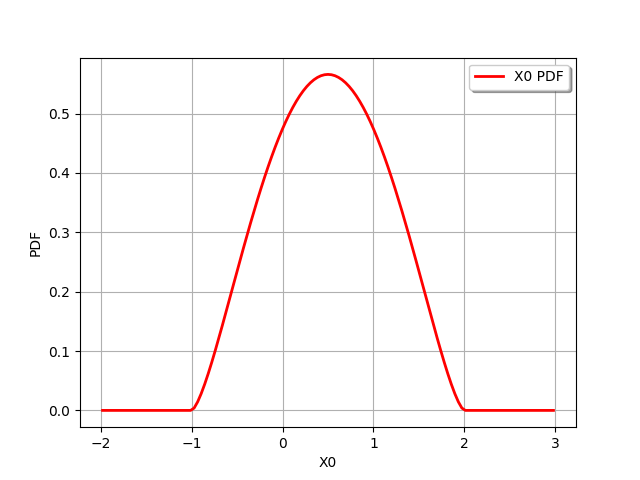
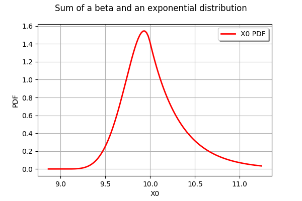
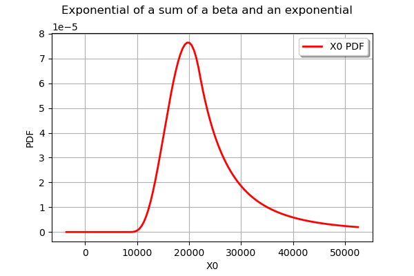
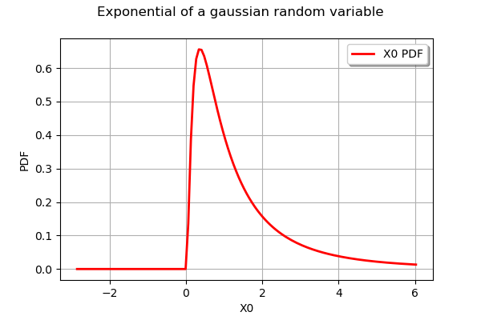
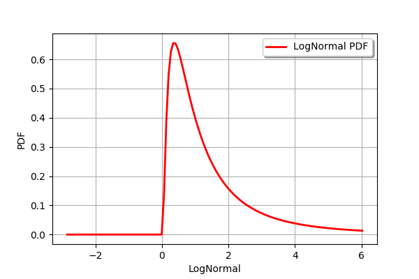
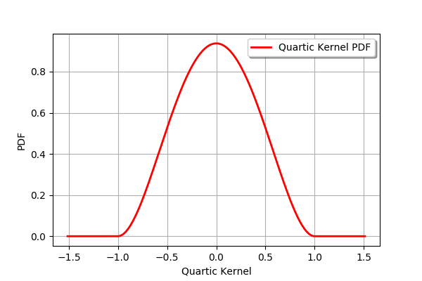

Overview of univariate distribution management¶
Abstract¶
In this example, we present the following topics:
the distributions with several parametrizations,
the arithmetic of distributions and functions of distributions,
the
CompositeDistributionfor more general distributions,a customized distibution with
PythonDistribution.
[1]:
import openturns as ot
Distributions with several parametrizations¶
By default, any univariate distribution uses its native parameters. For some few distributions, alternative parameters might be used to define the distribution.
For example, the Beta distribution has several parametrizations.
The native parametrization uses the following parameters:
 : the first shape parameter, ,
: the first shape parameter, , : the second shape parameter, ,
: the second shape parameter, , : the lower bound,
: the lower bound, : the upper bound with
: the upper bound with  .
.
The PDF of the beta distribution is:
for any , where  is Euler’s beta function.
is Euler’s beta function.
For any , the beta function is:
The Beta class uses the native parametrization.
[2]:
distribution = ot.Beta(2.5, 5, -1, 2)
distribution.drawPDF()
[2]:

The BetaMuSigma class provides another parametrization, based on the expectation  and the standard deviation
and the standard deviation  of the random variable:
of the random variable:
and
Inverting the equations, we get:
and
The following session creates a beta random variable with parameters , , et .
[3]:
parameters = ot.BetaMuSigma(0.2, 0.6, -1, 2)
parameters.evaluate()
[3]:
[2,5,-1,2]
The ParametrizedDistribution creates a distribution from a parametrization.
[4]:
param_dist = ot.ParametrizedDistribution(parameters)
param_dist
[4]:
class=ParametrizedDistribution parameters=class=BetaMuSigma name=Unnamed mu=0.2 sigma=0.6 a=-1 b=2 distribution=class=Beta name=Beta dimension=1 r=2 t=5 a=-1 b=2
Functions of distributions¶
The library provides algebra of univariate distributions:
+, -
*, /
It also provides methods to get the full distributions of f(x) where f can be equal to :
sin,cos,acos,asinsquare,inverse,sqrt.
In the following example, we create a beta and an exponential variable. Then we create the random variable equal to the sum of the two previous variables.
[5]:
B = ot.Beta(5, 7, 9, 10)
[6]:
E = ot.Exponential(3)
[7]:
S = B + E
The S variable is equipped with the methods of any distribution: we can for example compute the PDF or the CDF at any point and compute its quantile. For example, we can simply draw the PDF with the drawPDF class.
[8]:
graph = S.drawPDF()
graph.setTitle("Sum of a beta and an exponential distribution")
graph
[8]:

The exponential function of this distribution can be computed with the exp method.
[9]:
sumexp = S.exp()
[10]:
graph = sumexp.drawPDF()
graph.setTitle("Exponential of a sum of a beta and an exponential")
graph
[10]:

The CompositeDistribution class for more general functions¶
More complex functions can be created thanks to the CompositeDistribution class, but it requires an f function. In the following example, we create the distribution of a random variable equal to the exponential of a gaussian variable. Obviously, this is equivalent to the LogNormal distribution but this shows how such a distribution could be created.
First, we create a distribution.
[11]:
N = ot.Normal(0.0, 1.0)
N.setDescription(["Normal"])
Secondly, we create a function.
[12]:
f = ot.SymbolicFunction(['x'], ['exp(x)'])
f.setDescription(["X","Exp(X)"])
Finally, we create the distribution equal to the exponential of the gaussian random variable.
[13]:
dist = ot.CompositeDistribution(f, N)
[14]:
graph = dist.drawPDF()
graph.setTitle("Exponential of a gaussian random variable")
graph
[14]:

In order to check the previous distribution, we compare it with the LogNormal distribution.
[15]:
LN = ot.LogNormal()
LN.setDescription(["LogNormal"])
LN.drawPDF()
[15]:

The PythonDistribution class¶
Another possibility is to define our own distribution.
For example let us implement the Quartic kernel, which is sometimes used in the context of kernel smoothing. The PDF is defined by:
for any and otherwise.
Expanding the previous square, we find:
for any .
Integrating the previous equation leads to the CDF:
for any and otherwise.
The only required method is computeCDF. Since the PDF is easy to define in our example, we implement it as well. Here, the distribution is defined on the interval ![[-1,1]](../../_images/math/604c36c065689c2cc20e761c907bcb4fa035aeba.svg) , so that we define the
, so that we define the getRange method.
[16]:
class Quartic(ot.PythonDistribution):
def __init__(self):
super(Quartic, self).__init__(1)
self.c = 15.0 / 16
def computeCDF(self, x):
u = x[0]
if u <= -1:
p = 0.0
elif u >= 1:
p = 1.0
else:
p = 0.5 + 15./16 * u - 5. / 8 * pow(u,3) + 3./16 * pow(u,5)
return p
def computePDF(self, x):
u = x[0]
if u < -1 or u > 1:
y = 0.0
else:
y = self.c * (1 - u **2)**2
return y
def getRange(self):
return ot.Interval(-1, 1)
[17]:
Q = ot.Distribution(Quartic())
Q.setDescription(["Quartic Kernel"])
[18]:
Q.drawPDF()
[18]:
